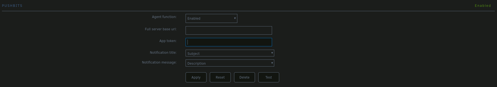

Matrix - 2. PushBits, la pasarela que faltaba
Como bien explique en el anterior articulo, explicaba la instalación y configuración, nada fácil, de mi servidor de matrix, ahora os vengo a traer el siguiente articulo, donde explico el uso que le he dado y los problemas que me he encontrado, así como los planes de futuro.
Después de la instalación de matrix, ahora tenía que configurar los servicios para que pudiera utilizar este nuevo servicio que he instalado, y aquí es donde me he encontrado algunos problemas, porque no todos los servicios que tengo actualmente, incluyendo a unRaid, no están del todo preparados para su uso. Ya lo iréis viendo si seguís leyendo.
El primer servicio que quería que utilizara matrix es flexget, y así, en vez de usar telegram, usaría matrix. Según la documentación de flexget, este servicio estaba soportado, aunque tengo que decir que la documentación, siento usar estas palabras, es un poco penosa, no sé cómo pueden poner esa información. Podrían explicar qué tipo de mensajes soporta esta aplicación, de qué manera se tienen que enviar, etc… cosas que te pueden servir de ayuda para que tú después lo utilices de la manera que quieras.
Pero lo único que te indican es lo siguiente:
notify:
entries:
via:
- matrix:
server: "https://matrix.org"
token: senders token
room_id: room identifier
Nada más. Eso sí, te explican qué es cada cosa (server, token y room_id), pero ya está. Lo siento, pero para mí esto no es una documentación, más bien son los apuntes de alguien.
Siento decir que esto solo es el principio, porque cuando me puse a hacer las pruebas, no había manera de hacerlo funcionar con la instalación de Conduit que yo tenía. No funcionaba ni para atrás. Cambiando scripts, haciendo pruebas con todo lo que me encontraba por Internet, haciendo preguntas a Copilot, que teóricamente tiene acceso a todo lo de GitHub y flexget está ahí. Cambiando de Conduit a Synapse, pero ni con esas había manera de enviar un simple mensaje a mi servidor de matrix.
La única respuesta que obtenía de flexget era lo siguiente:
root@08aa614bcf06:/config# Error while sending notification to `matrix`: 404 Client Error: Not Found for url: https://matrix.myServer.org/_matrix/client/r0/rooms/roomID/send/m.room.message?access_token=TOKEN
Al final, después de muchas preguntas al Slack de flexget, conseguí que me respondieran, y lo que me dijeron fue que el problema, por el mensaje que me estaba dando flexget, era que este estaba utilizando la antigua versión del envío de mensajes r0, en vez de la más actual que ya implementan todos los servidores de matrix, así como todos los clientes 😱.
Es una cosa que pude comprobar yo mismo, porque encontré el archivo que utiliza flexget para manejar las notificaciones, y se podía ver claramente cómo los envíos se hacen mediante una versión anterior a la que se usa actualmente en matrix. Pues empezamos bien. La primera en la frente.
También quería usar matrix para que mi servidor de unRaid me enviara todas las notificaciones, y aquí va la segunda en la frente, unRaid no está preparado, de momento, para hacer uso de matrix. Qué bien empezamos. Con lo que había sufrido para instalar matrix y voy y me encuentro que las dos primeras cosas que quiero usar matrix no están soportadas. Así que, ¿iba a hacer ahora? ¿Desinstalar matrix y volver a telegram?
nota: Como decía George S. Patton, Nunca estás vencido hasta que lo admites.
Así que me puse a investigar por la opción más importante y necesaria: hacer que unRaid pudiera enviar las notificaciones a matrix. Después de mucho investigar, encontré esta pregunta en el foro de unRaid, que al principio no acababa de entender, pero me explicaron que hay un servicio en Docker que se llama PushBits que hace de puente entre matrix y cualquier otro servicio, porque simula que estás enviando los mensajes a un servidor de Gotify, y actualmente hay muchos más servicios que pueden enviar notificaciones a Gotify, y uno de estos es unRaid, que, aparte de poder enviar notificaciones a un servidor Gotify, también permite el envío de notificaciones a PushBits.
nota: Tengo que decir que esto mismo lo hace atareao pero a través de webhooks, creo que se dice, pero es un tema que no acabo de entender del todo, así que de momento voy por este camino. Eso no quiere decir que en el momento en que entienda más del tema haga el cambio.
Pues ya tenía todo lo necesario para que tanto unRaid como flexget pudieran enviar mensajes a Gotify. ¿Seguro que lo tenía todo? Faltaba la parte más difícil de todas, la instalación y configuración. Y aquí se viene otro baño de realidad. En el repositorio de Pushbits no encontraba nada de cómo hacer posible la instalación a través de docker-compose.yml y cómo usarlo después.
Así que de nuevo a investigar. Nunca se va a acabar esto de investigar 😓. Lo único que me alegra es que cuando deje de investigar solo será por dos posibilidades: o soy tan listo que lo sé todo 🤣, cosa difícil, o es que estoy muerto 💀.
Pero lo que es la vida, no sé cómo, pero encontré la web de PushBits, donde te puede llevar tanto al repositorio como a la documentación. No sé cómo no lo vi antes, y en la documentación, aquí sí, es donde obtuve lo primero: el fichero del docker-compose para poderlo usar:
pushbits:
image: ghcr.io/pushbits/server:latest
container_name: matrixPushbits
networks:
- proxy
volumes:
- /etc/localtime:/etc/localtime:ro
- /etc/timezone:/etc/timezone:ro
- ${HOME}/config/matrix/pushbits:/data
environment:
PUSHBITS_DATABASE_DIALECT: 'sqlite3'
PUSHBITS_ADMIN_MATRIXID: '@user:matrix.myServer.org' # The Matrix account on which the admin will receive their notifications.
PUSHBITS_ADMIN_PASSWORD: 'passwordAdmin' # The login password of the admin account. Default username is 'admin'.
PUSHBITS_MATRIX_USERNAME: 'userMatrix' # The Matrix account from which notifications are sent to all users.
PUSHBITS_MATRIX_PASSWORD: 'passwordMatrix' # The password of the above account.
labels:
- traefik.enable=true
- traefik.http.services.pushbits.loadbalancer.server.port=5050
- traefik.http.routers.pushbits.entrypoints=websecure
- traefik.http.routers.pushbits.rule=Host(`${NOTIFY_SERVER}`)
Luego me faltaba entender su funcionamiento, y siento decir que la documentación, a excepción de su instalación, también peca un poco, o a lo mejor soy yo que no encuentro las cosas, que también puede ser.
Pero de nuevo la suerte fue mi aliada. Qué sería de mí sin las incidencias que entra la gente, porque encontré esta incidencia donde explicaba todo lo que se tiene que hacer para usar PushBits, pero en ese caso fallaba, pero para mí ya era algo. Había conseguido toda la información necesaria para usar este nuevo servicio.
Aparte de saber cómo se tiene que usar, también tienes que tener el fichero de configuración, que puedes obtener un ejemplo del repositorio, aunque yo pongo el que estoy utilizando ahora mismo y que me funciona perfectamente:
# A sample configuration for PushBits.
# Populated fields contain their default value.
# Required fields are marked with [required].
debug: false
http:
# The address to listen on. If empty, listens on all available IP addresses of the system.
listenaddress: ''
# The port to listen on.
port: 5050
# What proxies to trust.
trustedproxies: []
# Filename of the TLS certificate.
certfile: ''
# Filename of the TLS private key.
keyfile: ''
database:
# Currently sqlite3, mysql, and postgres are supported.
dialect: 'sqlite3'
# - For sqlite3, specify the database file.
# - For mysql specify the connection string. See details at https://github.com/go-sql-driver/mysql#dsn-data-source-name
# - For postgres, see https://github.com/jackc/pgx.
# Also consider the canonical docs at https://www.postgresql.org/docs/current/libpq-connect.html#LIBPQ-CONNSTRING.
connection: 'pushbits.db'
admin:
# The username of the initial admin.
name: 'admin'
# The password of the initial admin.
password: 'admin'
# The Matrix ID of the initial admin, where notifications for that admin are sent to.
# [required]
matrixid: ''
matrix:
# The Matrix server to use for sending notifications.
homeserver: 'https://matrix.myServer.org'
# The username of the Matrix account to send notifications from.
# [required]
username: '@user:matrix.myServer.org'
# The password of the Matrix account to send notifications from.
# [required]
password: ''
security:
# Whether or not to check for weak passwords using HIBP.
checkhibp: false
crypto:
# Configuration of the KDF for password storage. Do not change unless you know what you are doing!
argon2:
memory: 131072
iterations: 4
parallelism: 4
saltlength: 16
keylength: 32
formatting:
# Whether to use colored titles based on the message priority (<0: grey, 0-3: default, 4-10: yellow, 10-20: orange, >20: red).
coloredtitle: false
# These settings are only relevant if you want to use PushBits with Alertmanager
alertmanager:
# The name of the entry in the alerts annotations or labels that should be used for the title
annotationtitle: title
# The name of the entry in the alerts annotations or labels that should be used for the message
annotationmessage: message
repairbehavior:
# Reset the room's name to what was initially set by PushBits.
resetroomname: true
# Reset the room's topic to what was initially set by PushBits.
resetroomtopic: true
Aparte del fichero de configuración, también necesitas crear una sala / aplicación (yo asimilo sala de matrix, con aplicación de PushBits), donde primero tienes que dar de alta la aplicación, del que obtendrás un TOKEN que podrás usar para identificar quién está enviando los mensajes a matrix. Y esto se consigue de la siguiente manera:
usuari@debian:~$ docker exec -it matrixPushbits sh
# PER SABER LA IP DEL CONTENIDOR DE PUSHBITS, AMB AQUESTA INSTRUCCIÓ ES POT ACONSEGUIR
$ docker inspect <container_name> | grep "IPAddress"
# VISUALITZEM LES SALES / APLICACIONS QUE TENIM ACTUALMENTE
/app $ pbcli application list --url http://172.20.0.5:8080 --username admin
# En el cas de que en vulguessim crear una sala / aplicació, hauries de fer el següent
# En aquest cas, estic creant una sala / aplicació per a flexget
/app $ pbcli application create flexget --url http://172.20.0.5:8080 --username admin
nota: Cuando pongas la URL ten en cuenta que es la URL del contenedor donde está corriendo PushBits.
Cuando tengas creada la sala / aplicación, obtendrás un token que será el que tendrás que utilizar para validarte con PushBits y, a su vez, este se comunicará con la sala de matrix. Y te puedo asegurar que funciona a la perfección 🎉.
Ya solo nos queda configurar unRaid para que se envíen las notificaciones y, como este está preparado para PushBits, pues todo perfecto:

De la misma manera que unRaid funciona con PushBits, flexget, como tiene la posibilidad de enviar notificaciones a través de Gotify y PushBits puede simular a este, pues nada más sencillo:
notify-all:
notify:
entries:
title: 'Nou Video'
message: |+
*Titol:* { original_title | replace('.XXX.720p.HEVC.x265.PRT', '') | replace('.XXX.720p.HD.WEBRip.x264-TGxXX', '') | asciify | strip_symbols }
# Això són pruebas per enviar imatges a matrix, però que de moment no funcionen.
[Image](https://img.freepik.com/free-photo/side-view-woman-bdsm-aesthetics_23-2151117274.jpg)
via:
- gotify:
# Adreça de PushBits
url: '{? credencials.gotify.server ?}'
# Token que ens ha donat al donar d'alta l'aplicació
token: '{? credencials.gotify.token ?}'
# Prioritat del missatge. Aquí et recomano que revisis la documentació de Gotify
# En el meu cas, jo tinc posat el valor 1
priority: '{? credencials.gotify.priority ?}'
# Format dels missatges
content_type: 'text/markdown'
Ahora sí que podemos decir que todo lo que yo quería ya lo tengo en funcionamiento. Aunque tengo que seguir investigando la posibilidad de poder enviar imágenes como mensajes adjuntos, pero esto ya lo dejo para más adelante. Lo siguiente es hacer, como tiene en funcionamiento atareao, un bot de matrix para que me vaya informando de los mails que voy recibiendo y luego, el tiempo ya dirá…